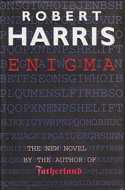

Il romanzo Enigma di Robert Harris ruota intorno al ruolo di Enigma nel contrasto all'azione dei sommergibili tedeschi durante la seconda guerra mondiale. Ambientato proprio a Bletchley Park, il romanzo condensa in poche settimane la storia della decodifica di Enigma, ricordando il ruolo iniziale dei polacchi, il metodo e la tecnologia messi a punto dagli inglesi (tra i quali fa la sua apparizione Alan Turing in persona) e il finale passaggio di consegne agli americani. Dal romanzo fu tratto il film omonimo del 2001, prodotto da Mick Jagger.

Enigma di Robert Harris
Film
Le vicende che hanno avuto al loro centro la macchina cifratrice Enigma hanno inoltre ispirato alcuni film, più o meno aderenti agli avvenimenti storici accertati:
Sekret Enigmy (Secret of Enigma) (1979), film polacco di Roman Wionczek, storia del Biuro Szyfrów (Ufficio Cifra) polacco che violò per primo il codice di Enigma
Breaking the Code (1996), film TV inglese di Herbert Wise sulla vita di Alan Turing;
U-571 (2000), film di Jonathan Mostow (coproduzione franco-statunitense). Gli americani vengono a sapere che un U-Boot tedesco in difficoltà attende soccorso da un altro U-Boot. Una squadra di incursori viene subito approntata e inviata con un sommergibile mascherato da U-Boot tedesco per abbordarlo e impadronirsi di Enigma e relativi documenti di cifratura, ma qualcosa va storto. Premio Oscar 2001 per la migliore colonna sonora;
Enigma (2001), film di Michael Apted, (coproduzione inglese, statunitense, tedesca e olandese) tratto dall'omonimo romanzo di Robert Harris. Nel marzo 1943 i decifratori di Bletchley Park scoprono con disappunto che i tedeschi hanno modificato il sistema Enigma usato dai loro U-Boot. Il brillante decrittatore Tom Jericho viene incaricato di trovare un altro sistema per decifrare nuovamente i messaggi ma un sospetto di spionaggio cade su di lui a causa della scomparsa contestuale della sua fidanzata.
All the Queen's Men (2001), film di Stefan Rutzowitzky (coproduzione tedesca, austriaca e statunitense). Quattro strani personaggi verso la fine della seconda guerra mondiale vengono paracadutati in Germania per raggiungere la fabbrica dove sono prodotte le macchine Enigma e portarne via una;
The Imitation Game (2014) un film di produzione USA e Gran Bretagna sulla vita di Alan Turing, grande matematico ed esperto di crittografia inglese che, ingaggiato dai servizi segreti britannici durante la seconda guerra mondiale, decifrò i messaggi di Enigma. Premio Oscar 2015 per la miglior sceneggiatura non originale di Graham Moore basata sul libro di Andrew Hodges.
La locandina di "The Imitation Game"
Musica
I Dream Theater hanno intitolato Enigma Machine una traccia del loro album Dream Theater (2013).
Videogiochi
Alcuni videogiochi ambientati nella seconda guerra mondiale contengono una o più missioni che prevedono la cattura di un dispositivo Enigma; tra questi, Hidden & Dangerous, “Medal of Honor Heroes”, Wolfenstein: The New Order e Commandos 2, Wolfpack.